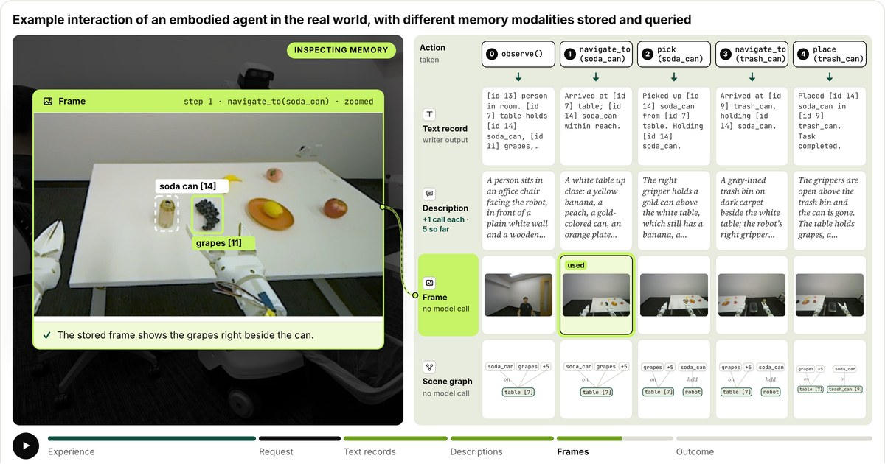

Yuchen Liu
SPATIAL REPRESENTATIONS · ROBOT LEARNING
Fourth-year PhD student at Purdue University
Seeking Summer 2027 research internships
About Me
I am a CS PhD student at Purdue University’s CoRAL Lab, advised by Prof. Ahmed H. Qureshi. I develop spatial representations that help robots plan and interact with the physical world, with a focus on neural motion planning. My work on Active Neural Time Fields, published in IEEE Transactions on Robotics (T-RO), received a King-Sun Fu Best Paper Award Honorable Mention. In parallel, I study low-light 3D reconstruction through DarkSplat.
At Dexmate AI (Summer–Fall 2026), I work on interactive digital twins reconstructed from real RGB-D captures, navigation and manipulation skills in simulation and on physical robots, and real-to-sim-to-real transfer.
Latest News
- October 16, 2026 Shape-NTFields is now available as an arXiv preprint.
- October 13, 2026 MoMaBond: Bridging Navigation and Manipulation through Object-Centric Alignment has been accepted for publication in IEEE RA-L.
- October 8, 2026 Our MeMoREval technical report on memory modalities for embodied agents is now on arXiv.
- Summer–Fall 2026 I am a Research Intern at Dexmate AI.
Earlier news (6)
- 2026 Our T-RO paper "Physics-informed Neural Mapping and Motion Planning in Unknown Environments" received an Honorable Mention, King-Sun Fu Best Paper Award.
- 2026 Our paper "Weakly-supervised Learning for Physics-informed Neural Motion Planning via Sparse Roadmap" was accepted at ICRA 2026.
- June, 2025 Our paper "Online Hierarchical Policy Learning using Physics Priors for Robot Navigation in Unknown Environments" accepted at IROS 2025!
- June, 2025 Our paper "Physics-informed Neural Motion Planning via Domain Decomposition in Large Environments" accepted at IROS 2025!
- Summer 2025 I worked as a visiting scholar at the TEA Lab at Tsinghua University.
- January, 2025 Our paper "Physics-informed Neural Mapping and Motion Planning in Unknown Environments" accepted at T-RO!
Research & Publications
Real pushing (6×) → 3D planning (simulation)
Shape-Aware Neural Time Fields for Rigid-Body Motion and Manipulation Planning
arXiv preprint, 2026
Shape-aware planning costs model how geometry and orientation constrain rigid-body motion, supporting 3D path planning and real-world pushing.
Real-robot demo · 8× playback
MoMaBond: Bridging Navigation and Manipulation through Object-Centric Alignment
IEEE Robotics and Automation Letters (RA-L), 2026
Object-centric alignment connects navigation with manipulation, allowing robots to reuse manipulation skills across environments.

Physics-informed Neural Mapping and Motion Planning in Unknown Environments
T-RO 2025
Honorable Mention, King-Sun Fu Best Paper Award (2026)
Physics-informed arrival-time fields combine mapping and motion planning for active exploration and navigation in unknown environments.

What Should Embodied Agents Remember? Benchmarking and Evaluating Memory Modality for Embodied Agents
Technical report · arXiv, 2026
A benchmark compares text, images, and scene graphs as memories for embodied agents across 53 tasks, evaluating task success and memory cost.

Physics-informed Neural Motion Planning via Domain Decomposition in Large Environments
IROS 2025
Domain decomposition scales neural motion planning to large indoor environments, with deployment on a Unitree B1 quadruped.

Online Hierarchical Policy Learning using Physics Priors for Robot Navigation in Unknown Environments
IROS 2025
A global connectivity graph and local neural planners support navigation through large, unknown indoor environments.

Weakly-supervised Learning for Physics-informed Neural Motion Planning via Sparse Roadmap
ICRA 2026
Sparse roadmap supervision and physics constraints train continuous planning costs for robot motion planning.

A deep reinforcement learning environment for particle robot navigation and object manipulation
ICRA 2022
Outstanding Coordination Paper Award — Finalist
A reinforcement learning simulation environment supports particle robot navigation and object manipulation.

Mobile 3d printing robot simulation with viscoelastic fluids
IROS 2021
A simulation framework models mobile robot 3D printing with viscoelastic materials.
My Research Assistants

Qiuqiu

Naitang

Congo